Welcome to RadioGaGa documentation
Link : svn/NenuFar/trunk/receivers/RadioGAGA/doc/
Todo
- Finish to complete startup sequence
- Add path of configuration files
- Running mode, monitor ?
- Trigger doc
- PyFDa doc
Install docker
This documentation uses mkdocs (documentation : mkdocs-material-docs )
To avoid to install all dependencies needed, a dockerfile is set in the doc directory.
You need to have docker installed on your machine.
You can download it here
sudo apt-get update
sudo apt-get install \
apt-transport-https \
ca-certificates \
curl \
gnupg \
lsb-release
curl -fsSL https://download.docker.com/linux/ubuntu/gpg | sudo gpg --dearmor -o /usr/share/keyrings/docker-archive-keyring.gpg
sudo apt-get update
sudo apt-get install docker-ce docker-ce-cli containerd.io
echo \
"deb [arch=amd64 signed-by=/usr/share/keyrings/docker-archive-keyring.gpg] https://download.docker.com/linux/ubuntu \
$(lsb_release -cs) stable" | sudo tee /etc/apt/sources.list.d/docker.list > /dev/null
sudo apt-get update
sudo apt-get install docker-ce docker-ce-cli containerd.io
Run Docker commands without sudo
1. Add the docker group if it doesn't already exist
sudo groupadd docker
2. Add the connected user $USER to the docker group
Optionally change the username to match your preferred user.
sudo gpasswd -a $USER docker
Important
Log out and log back in so that your group membership is re-evaluated.
3. Restart the docker daemon
sudo service docker restart
If you are on Ubuntu 14.04-15.10, use docker.io instead:
sudo service docker.io restart
Commands
./build_docker.sh- Build the docker image./changelog.sh- Update docs/changelog.md./doc-build- Build the doc and generate the PDF../doc-serve- Start the live-reloading docs server. You can access it here : http://localhost:8000/
Firmware ↵
Signal Processing ↵
IPD Module
Introduction
This page will confirm the fonctionnement of the IPD module. We will see what it expexted in simulation. And confirm the fonctionnement with signaltap in the FPGA
Presentation

The figure 1 shows ports of the module. The input data bus is directly connected to the output of ADC. Input data bus is size of 8x14 bits and same in output. This module is a delay line, it allows to to correct time travel of signal above the instrument. To do this the module allows to set a delay from 0 to 255 sample on each channel. Those delay are configurable in the register interface
The module has the address offset of 16#1340000#.
16#1340000# = c_processing_address_offset + c_radiogaga_address_offset + c_IPD_address_offset
| Name | Address | Read | Write | Width | Comment |
|---|---|---|---|---|---|
| c_ipd_delay_x_offset | 16#00# | x | x | 4 | Add delay to antennas on X polar |
| c_ipd_delay_y_offset | 16#10# | x | x | 4 | Add delay to antennas on X polar |
Simulation
Shift test
IPD has 2 writable registers, delay_x and delay_y. So we can apply delay to both polarisations of each antenna. Each delay can be set on the range [0:255]. In simulation, I set delay incrementally by 25, like this we can see a shift of 25 sample on each channels. For this I wrote in the following registers :
# X polar
16#1340000# = 0
16#1340001# = 25
16#1340002# = 50
16#1340003# = 75
# Y polar
16#1340010# = 100
16#1340011# = 125
16#1340012# = 150
16#1340013# = 175

For simulation I sent the same pulse on each channels as we can see on in_y_arr(0).
First of all, we can see a shift between in_y_arr(0) and out_x_arr(0) . The delay of it was set to 0 but there is a shift of 15 ns. This is due by signal latching in VHDL. This delay is equivalent as 3 clock shots. This delay is not really important because it is applied on each OUT channel, so if we mesure shift between them, it will be correct.
Now we can see on the figure 3 a shift of 125 ns between the out_x_arr(0) and out_x_arr(1).
\(25 = 125 / 5 ns\). Our shift is correct.

An other example on the figure 4 between the first channel in_x_arr(0) with delay set at 0 and the last sample in_y_arr(3) with delay set at \(175 = 875 / 5 ns\)

Rej_IPD test
When delays are set by the register interface, signals can be unstable during the max length of the delay-line. So after reset or reconfiguration the signal Rej_IPD is pulled high. Such as the out signal is invalid during this period.
- At the beginning of the simulation Rej_IPD is pulled high because the FPGA start up
- On the first yellow marker, delays are set by interface register, Rej_IPD is pulled high again during \(1280 = 256 * 5ns\)
- On the third yellow marker we can see an another writing configuration by register interface.
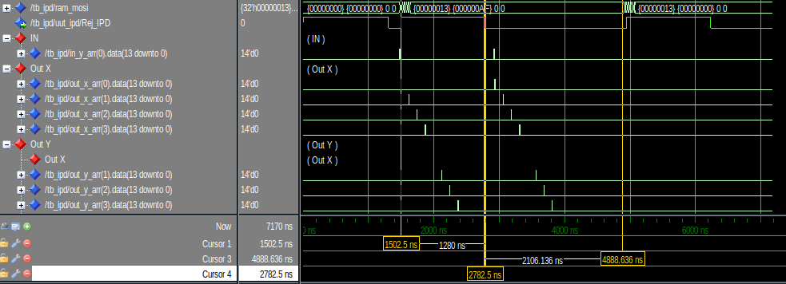
Signal TAP
Shift test
To test the FPGA in real condition, I set a signal tap with some interesting signal. On input of the card. I set a pulse sent every milliseconds.
On the figure 6 we can see a test with delay set to 0 and the figure 7 incrementally by 25 such as in simulation


Rej_IPD test
To test it, i just put a trigger on Rej_IPD, reconfigure the delays and we see the signal is pulled HIGH during 255 sample.
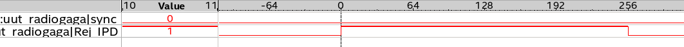
DCB
Introduction
This document will present and confirm the fonctionnement of DCB module. We will see what it expected in simulation. And confirm the fonctionnement with Signal Tap in the FPGA
Presentation
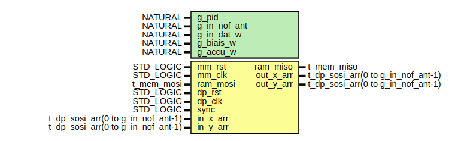
The figure 1 show the port of the module. The input is directly connected to the output of IPD module. Input data bus is size of 8x14 bits and 8x16 bits in output. The goal of this module is to add biais in order to delete DC offset from the ADC. To do this the module allow to estimate the average of the input. To read average and configure biais the register interface is set like below.
The module has the address offset of 16#1350000#.
16#1350000# = c_processing_address_offset + c_radiogaga_address_offset + c_DCB_address_offset
| Name | Address | Read | Write | Width | Comment |
|---|---|---|---|---|---|
| c_DCB_biais_x_offset | 16#00# | x | x | 4 | Delete DC offset on ADC |
| c_DCB_biais_y_offset | 16#10# | x | x | 4 | Delete DC offset on ADC |
| c_DCB_accu_x_low_offset | 16#20# | x | 4 | Lower bits of accumulator | |
| c_DCB_accu_y_low_offset | 16#30# | x | 4 | Lower bits of accumulator | |
| c_DCB_accu_x_high_offset | 16#40# | x | 4 | Higher bits of accumulator | |
| c_DCB_accu_y_high_offset | 16#50# | x | 4 | Higher bits of accumulator |
Simulation
Biais add
DCB has 2 writable registers, biais_x and biais_y. Those biais has a width of 16 bit, 14 for integer part and 2 for decimal part. If we apply a biais of 10, these are :
\((1010)_{2}=(10)_{10}\)
\((1010+00)_{2}=(40)_{10}\)
So we can apply biais to both polarization of each antenna. In simulation, I set biais incrementally by 100, like this we can see + 100 on each channels.
To set biais we have to write in following registers :
# X polar
16#1350000# = 0
16#1350001# = 400
16#1350002# = 800
16#1350003# = 1200
# Y polar
16#1350010# = 1600
16#1350011# = 2000
16#1350012# = 2400
16#1350013# = 2800
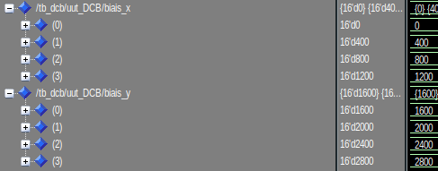
The value are multiply by 4 caused by 2 bit added for the decimal part.
So now we apply a signal of 10 on all the input :
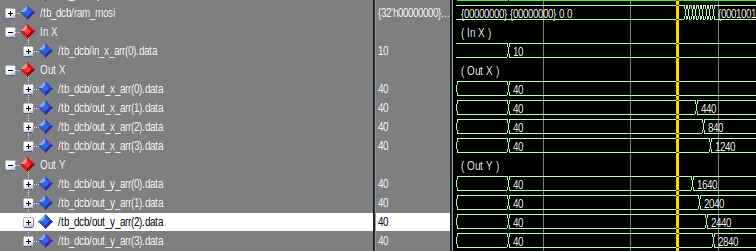
Average estimation
To set biais we need to estimate the average of the input. To calcul it, the FPGA accumulate the input during 200M of sample (1 sec). Is difficult to divide in vhdl, so the module return the accumulation not normalized. The division by 200M will be done by the soft on server.

On the figure 4 we can see the signal accumulate on a period of 1 µs (1 sec in reality). On the right bottom corner, the accumulation is latched on a rising edge of sync and we can see the value of the accumulation during 1µs.
So on the X input it gives :
In FPGA
n_sample = 1 000ns/5ns
n_sample = 200
accu_x_r = 50 * 200
accu_x_r = 10 000
In soft
moyenne = 10 000 / 200
moyenne = 50
Signal TAP
Biais add
To verify the fonctionnement of this module on the FPGA, the input of the card are still open. To estimate the average on each input I realized a little python program to parse the signal TAP data. With and without biais configuration it gives :
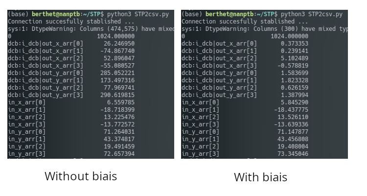
On the left of figure 5 we can see the average on 1024 sample on each input. DCB out is just the input with 2 bit added for decimal part.On the right of the figure 5 we can see when we applied biais on each entry. To this we apply -26.2 (4 x 6.55) on in_x_arr[0] +74.9 on in_x_arr[1] etc. Values are nears to zero, what is expected.
5.2. Average Estimation
Now to read accumulation from the FPGA it was a bit complicated. The value is accumulate in a 40 bits word. But the register interface accept only until 32 bits word. So i cut the word in 2 part ; low_acc(32 lower bits) and high_acc(8 higher bits). In the soft those value are stock in two variable uint64_t. The MSB is duplicated on the whole word to keep the sign. Then the hig_acc part is shifted by 32 bits. Finally the 2 parts are added to be divided by 200M.
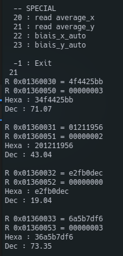
For Example on the figure 6 we can see the DC offset on the Y polarisation. That's correspond with the figure 5.
Presum
Introduction
This page will confirm the fonctionnement of the presum module. We will see what it expected in simulation. And confirm the fonctionnement with signaltap in the FPGA
Presentation

The figure 1 shows ports of the module. The input is directly connected to the output of DCB. Input data bus is size of 8x16 bits and 2x18 bits in output. This module will just add all antennas on both polarization. In register interface it's allow to disable one or more antenna. The register interface is set like below.
The module has the address offset of 16#1360000#.
16#1360000# = c_processing_address_offset + c_radiogaga_address_offset + c_presum_address_offset
| Name | Address | Read | Write | Width | Comment |
|---|---|---|---|---|---|
| c_presum_ant_sel_x_offset | 16#00# | x | x | 4 | Disable antennas on x polar |
| c_presum_ant_sel_y_offset | 16#10# | x | x | 4 | Disable antennas on Y polar |
Simulation
Enable/disable antennas
The register ant_sel_x and ant_sel_y are initialized to '1' in the FPGA. Like this all inputs are enable. To disable we have to write '0' to the antenna which we want want to disable.
For exemple to disable the 2nd and 4th antenna of the X polarization we have to write in the register interface like below :
# X polar
16#1360000# = 1
16#1360001# = 0
16#1360002# = 1
16#1360003# = 0
Summation
Now the FPGA check for each antenna if ant_sel is '0' or '1' and if is '1' datas of the inputs are added, else the input is replaced by zero.
On the figure 2, at the beginning of simulation, all antennas are set to '1' so the output is equal to sum of 4 antennas for each polarization. Then the 2nd and the 4th antenna are disable for X and Y polar respectively.

Signal TAP
Enable/disable antennas
On the figure 3 we can read and write in both register. For this test we can see I disable the 2nd and the 4th antenna for the X polar. And for the the 1st and 2nd antenna are disable.
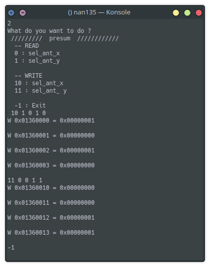
Summation
To verify the good fonctionnement of it, we will use the same python program like we used to test DCB. It export data from signal TAP and we can read the average of each polar in different modules.

On the figure 4 we can see the sum on highlight lines. presum_out is equal to the sum of DCB_out_x_arr[n] on each polar.
So if we take the exemple beside for X polar :
presum|out_x = dcb|out_x_arr[0] + dcb|out_x_arr[2]
presum|out_x = 21.5 + 56
presum|out_x = 77.5
And for the Y polar :
presum|out_y = dcb|out_x_arr[2] + dcb|out_x_arr[3] presum|out_y = 76.9 + 294.2 presum|out_y = 371.1
Filter
Introduction
This page will confirm the fonctionnement of the filter module. We will see what it expected in simulation. And confirm the fonctionnement with signaltap in the FPGA
Presentation
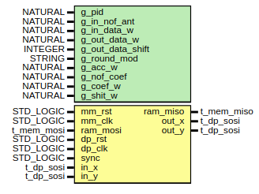
The figure 1 shows ports of the module. The input data bus is directly connected to the output of presum. Input data bus is size of 2x18 bits and 2x18 bits in output. This module is a numeric filter. It takes 128 coef and use FIR implementation to filter the signal. It possible to shift the output of the signal to decrease the gain of the filter.
The module has the address offset of 16#1370000#.
16#1370000# = c_processing_address_offset + c_radiogaga_address_offset + c_filter_address_offset
| Name | Address | Read | Write | Width | Comment |
|---|---|---|---|---|---|
| c_filter_coef_offset | 16#00# | x | x | 128 | Coefficient of the filter |
| c_filter_shift_offset | 16#FF# | x | x | 1 | Shift to apply on the output |
This module has 2 architectures, normal and transposed. Difference between both are explained here. Today, is the transposed structure that is used, it allows to use DSP blocks in FPGA, explained here.
This module have important generic port to determine the good fonctionnement.
- g_round_mod : This allow to choose the rounding mode for the output. Today only truncate is available.
- g_nof_coef : Determine the number of coefficient for the implementation. 128 is sufficient for our application.
- g_out_data_shift : For the normal architecture only, the shift is not configurable in the register interface so it's declared here.
- g_acc_w : \(18 + 18 + \frac{log(128)}{log(2)} = 44\)
- g_coef_w : Coefficients are defined on 16 bits.
- g_shift_w : The shift value is defined on 6 bits.
Simulation
Ramp coefficients
First of all before to test is the filter make the job, we can set coefs from 0 to 128 by 1. To do this we have to write to the following addresses :
16#1370000# = 1
16#1370001# = 2
16#1370002# = 3
...
16#13700126# = 127
16#13700127# = 128
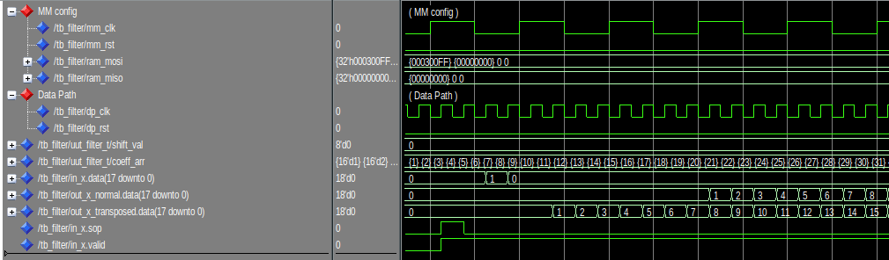
On the figure 2 we can see a pulse of 1 is sent on in_x.data during only one sample. We have 2 outputs because I instantiate both architecture, normal and transposed. So we can see our pulse multiplied by each coefficient until the 128th.
Info
We can notice the transposed implementation generates less retard than the normal structure.
Shift test
To compensate the gain involved by the filter. An adjustable shift is implemented. It allow to shift to the right the signal. For exemple :
mysignal <= 80 --(0b1010000)
mysignal <= shift_right(mysignal, 2)
-- mysignal = 20 (0b10100)
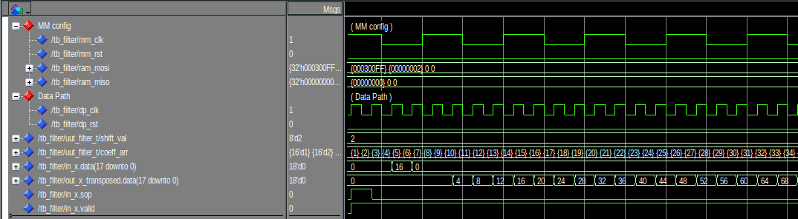
On the figure 3 the pule is now of 16 and the shift of 2. And we can see on the output the signal is always multiplied by the ramp coefficients but now is divided by \(2^2 = 4\)
Signal TAP
Test of a 36MHz rejector
To verify the fonctionnement of the filter I directly test it in the FPGA. For it I just generated a sinusoidal with a GBF.
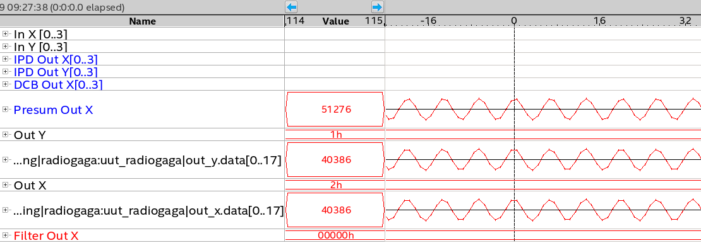
On the figure 4 we can see a signal of 30MHz, it pass trough without any attenuation.
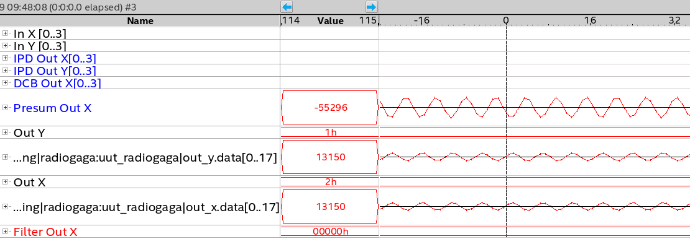
Now on the figure 5 we can see the signal is a bit attenuated at 35MHz and completely at 36MHz.
We can also see the spectrum of the output. There is a big reject of 50dB at 36M.
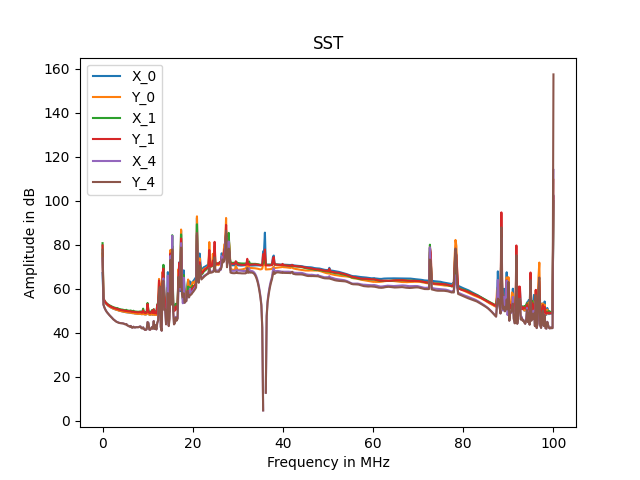
Info
The filter module is instantiate 3 times, so we can apply 3 different filters on the signal. We just have to reconfigure the coefficient in the register interface. To generate coefficient, we used pyFDA explained here : PyFDA doc
Ended: Signal Processing
UDP Sender
Introduction
This document will present and confirm the fonctionnement of UDP_sender module. We will see what it expected in simulation. And confirm the fonctionnement with Signal Tap in the FPGA.
Presentation
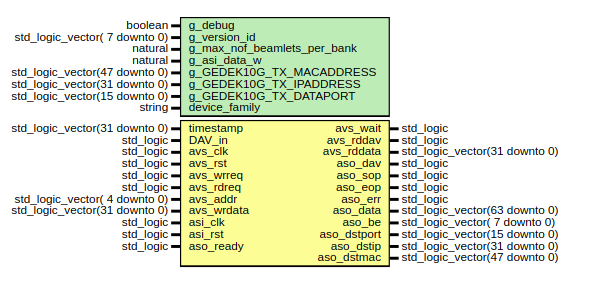
This has to sent an UDP frame on the network when a cosmic gerbe is detected. The frame will be transmitted by a 10G link. For this on the figure 1 we can see different ports (yellow) of the module.
In the generic interface (green) we can set the default IP configuration of the destination server.
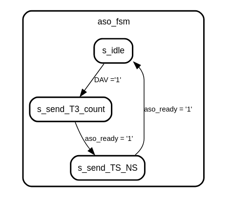
On the figure 2 we can see the state machine of the module. By default the module is in idle mode. It is waiting a DAV from the trigger module.
When a DAV is sent, the module will put 2 packets of 64 bits in the frame :
-- First packet --
!T3! : Header of the frame. 4 ASCII character, so 32 bits width.
count : Number of the frame since the boot of the card.
-- Second packet --
timestamp : Is the timestamp when the trig happened
nanosecond : Is the nanosecond in the timestamp when the trig happened for more accuracy.
So now one the figure 3 we can see reception of a frame with netcat.
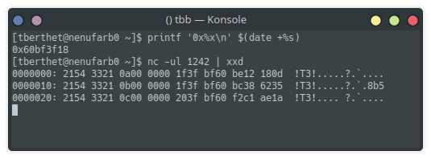
The module has the address 16#980000#. Below they are the different address of the register interface.
| Name | Address | Read | Write | Width | Comment |
|---|---|---|---|---|---|
| c_UDP_sender_version_id_offset | 16#00# | x | 1 | Version _ id of the framer | |
| c_UDP_sender_lo_32_mac_offset | 16#01# | x | x | 1 | Lower 32 bits of the mac address |
| c_UDP_sender_hi_16_mac_offset | 16#02# | x | x | 1 | Higher 32 bits of the mac address |
| c_UDP_sender_ip_offset | 16#03# | x | x | 1 | Ip address |
| c_UDP_sender_port_offset | 16#04# | x | x | 1 | Port |
| c_UDP_sender_manual_dav_offset | 16#05# | x | 1 | Allow to send a frame manually (for test) | |
| c_UDP_sender_delay_ns_offset | 16#06# | x | x | 1 | Time in number of sample to delete the traitement time |
| c_UDP_sender_enable_offset | 16#07# | x | x | 1 | Enable/disable to sending frame on 10G output |
Simulation
To simulate this module, we have just have to up DAV during one sample and watch the frame on the 10G bus.
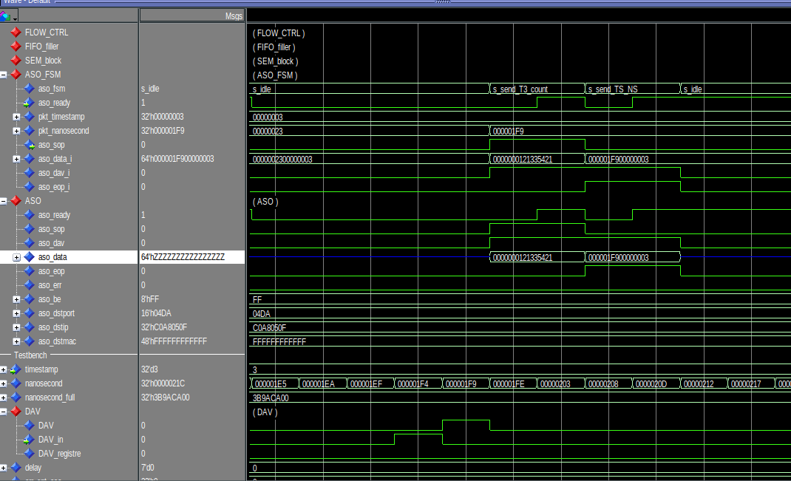
Here we can see the nanosecond during the pulse is 1F9 and we can see it in the frame on aso_data.
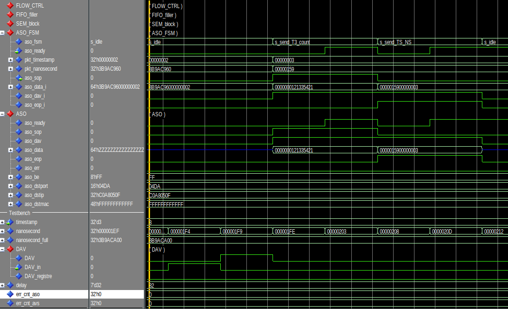
Now the DAV is always at 1F9 but in the frame we see 159. Because we want to delay of 32 sample.
0x1F9 - 32 * 5 = 0x159
Signal TAP
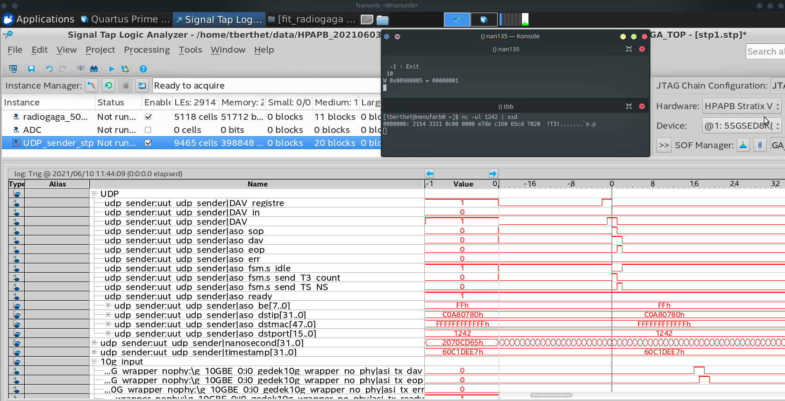
In the register interface of UDP sender is possible to send a DAV manually. Is very useful to test if the 10G configuration is working well.
So on the figure 6 we see in the terminal we write '1' in at the address 16#980005#. So after this the frame is built and put on the 10G interface.
By inverting the bytes 2 by 2 we can read timestamp and nanosecond correctly.
Trigger
TODO
Ended: Firmware
Software ↵
Configuration files for RadioGaga
Presentation of files
This page will describe how configuration files works for RadioGaGa.
There are 2 types of files:
startup_configuration_board_X.conf
Contains all command to configure radiogaga module at the startup of the service. This files should load stable commands to enable the same startup each times.
Warning
Need to generate one file by board
This include :
- Load filter coefficients and configure shift.
- Apply a value of K and a shift for the trigger, not so low for prevent too much detection.
- Configure the register in SumX,
'0'for the last board,'1'for others. - UDP_sender :
- enable or not to send frames to TBB
- set the delay time on TS to delete the traitment time.
- Configure IP, mac address and port of TBB
recursive_configuration_board_X.conf
Those files allow to reconfigure specifics registers at each new pointing .
Warning
Need to generate one file by board
This include :
- Change coefficients and shift of filters.
- Set a new value to K and shift for the trigger.
- Allow to disable some MR in presum if there are some parasites or something else.
How to generate them ?
To generate those files there are 2 python scripts which take .yaml files to set different constant and parameters.
Path : svn/NenuFar/trunk/receivers/RadioGAGA/software/configuration_files/
# Input file to generate startup configurations files.
board:
#Board 0
- 0:
filter:
- 0:
path: band_24-76.conf
shift: 15
- 1:
path: rej_36.conf
shift: 15
- 2:
path: rej_73.conf
shift: 15
trigger:
k : 200
time_up_val_min : 2
time_up_val_max : 10
seuil_delay : 32
udp_sender:
# TBB ip configuration
mac: ff:ff:ff:ff:ff:ff
ip: 192.168.7.128
port: 1242
delay: 64
enable: 1
etc ...
# Input file to generate recursive configurations files.
board:
#Board 0
- 0:
filter:
- 0:
path: band_24-76.conf
shift: 15
- 1:
path: rej_36.conf
shift: 15
- 2:
path: rej_73.conf
shift: 15
trigger:
k : 200
time_up_val_min : 2
time_up_val_max : 10
seuil_delay : 32
# Board 1
- 1:
filter:
- 0:
path: band_24-76.conf
shift: 15
- 1:
path: rej_36.conf
shift: 15
- 2:
path: rej_73.conf
shift: 15
etc...
Before to run it you should have an updated working copy of the firmware :
svn/NenuFar/trunk/recepteur_LANewBa/trunk/firmware/HPAPB/
And export the $HPAPB_ROOT_DIR environment variable. Example :
export HPAPB_ROOT_DIR="/home/berthet/Nancay/Nenufar/HPAPB/"
python gen_startup_configuration.py
python gen_recursive_configuration.py
After running scripts. Configurations files are generated, they have the same format than HPAPB_ADC.conf or others.
Example :
# Recursive configuration files for board 0
####################
# Filter 0
####################
# Coef :
W 1370000 ffffffcb
W 1370001 22
W 1370002 2c
W 1370003 46
W 1370004 ffffffe2
W 1370005 ffffffff
W 1370006 fffffff0
W 1370007 ffffffac
W 1370008 8
W 1370009 ffffffff
W 137000a 6
W 137000b 70
...
Startup sequence
This chapter will present step by step the configuration needed at the startup of the HPAPB board.
The firmware RadioGaGa is based on LANewBa, so there is a lot of similitude between both.
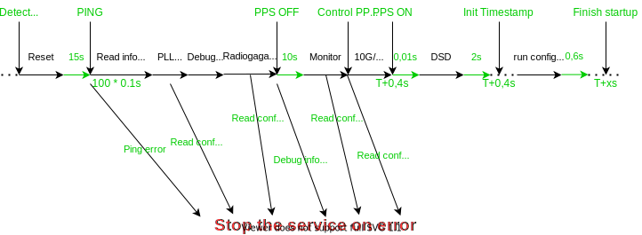
Ping
First of all when tartup is detected we need to ping the board on the 1G interface.
1G configuration :
- GEDEK_IP_ADDRESS :
192.168.6.128 + number_of_the_card - GEDEK_MACADDRESS :
00:07:ed:a8:06:80 - GEDEK_UDP_AVM_PORT :
2271 - GEDEK_UDP_TXPORT :
1271
Read status
Read constant of the board (version of the firmware, temperature etc.) Sames addresses than LANewBa.
TODO
ADC and PLL configuration
There is exactly same on LANewBa, we need to run the file :
svn/NenuFar/trunk/recepteur_LANewBa/trunk/firmware/HPAPB/soft/HPAPB_LMK.conf
Config RadioGaGa modules
To configure RadioGaGa modules, we need to run the startup_configuration_board_X.conf for each board. For more information read this page : Software/Configuration files
Monitor
Run the configuration file svn://MonitorPath
DSD
Write '1' in the register c_DSD_control_offset
W 010300F0 1
END of startup configuration
Monitor
When the board is booted correctly, it needed to read in some registers for safety of the board. For this we read in registers of monitor modules.
To this it's exactly the same than LANewBa.
TODO
SumX
SumX uses fifo, we need to monitor if those fifo are not full or empty. To this we should to read at the address c_sumX_debug_fifo_offset
R 0x009c0401 = 0
debug_fifo[6] = sop_misalign
debug_fifo[5] = tx_dcifo_wrful
debug_fifo[4] = tx_dcifo_rdemp
debug_fifo[3] = rx_dcfifo_wrful
debug_fifo[2] = rx_dcfifo_rdemp
debug_fifo[1] = resync_scfifo_wrful
debug_fifo[0] = resync_scfifo_rdemp
'0' else on error occurred, we can know which fifo is wrong by decoding the word.
Recursive configuration
As it's explained here : Software/Configuration files we need the possibility to reconfigure some modules in the FPGA.
To this it's needed to reload the recursive_configuration_board_X.conf at each new pointing.
Ended: Software
Divers ↵
PyFDA
This page explains how to generate coefficients for filter module.
To do it we use pyFDA, it's a open source python program. To dowload it :
pip install pyfda
pyfdax
Import existing filter
Now you can load a an existing filter project (.npz) to autoconfigure different parameters.
Files : svn/NenuFar/trunk/receivers/RadioGAGA/doc/ -- todo

Export new set of coefficients
Now to generate a new filter you just have to modify frequency and weight parameters as your wish.
Then when you are satisfied by the configuration, click on b,a tab, then set fields to Dec and Integer with W = 16
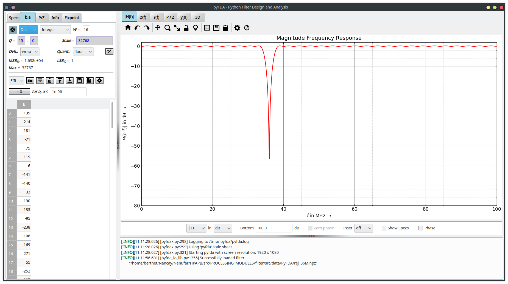
Click on save button and save it in svn/NenuFar/trunk/recepteur_LANewBa/trunk/firmware/HPAPB/src/PROCESSING_MODULES/filter/src/data/PyFDA/
Ended: Divers
Changelog
r9937 | berthet | 2021-09-17 19:09:33 +0200 (ven. 17 sept. 2021) | 1 ligne
Try to add radiogaga doc in .html
r9852 | berthet | 2021-06-28 11:48:56 +0200 (lun. 28 juin 2021) | 1 ligne
Add pdf
r9851 | berthet | 2021-06-28 11:36:34 +0200 (lun. 28 juin 2021) | 4 lignes
- Add Firmware/hierarchy section
- Add Divers/Pyfda section
- Set up navigation bar for easier navigation between sections
- Remove changelog.md from versioning, auto-generated
r9839 | berthet | 2021-06-22 16:31:58 +0200 (mar. 22 juin 2021) | 1 ligne
Fix bug with name of pdf, finish Configuration_files page, update udp_sender register table.
r9827 | berthet | 2021-06-18 19:05:13 +0200 (ven. 18 juin 2021) | 1 ligne
Add pdf
r9826 | berthet | 2021-06-18 18:58:08 +0200 (ven. 18 juin 2021) | 1 ligne
Update software section
r9825 | berthet | 2021-06-18 18:52:14 +0200 (ven. 18 juin 2021) | 1 ligne
Add todo list plugin
r9824 | berthet | 2021-06-18 18:51:55 +0200 (ven. 18 juin 2021) | 1 ligne
remove sudo in script, add procedure to add docker to user group in Index.md
r9823 | berthet | 2021-06-18 18:49:48 +0200 (ven. 18 juin 2021) | 1 ligne
modify dockerfile, use a very lighter version of python
r9817 | viou | 2021-06-17 14:04:57 +0200 (jeu. 17 juin 2021) | 1 ligne
Move changelog at the end of the doc and include all doc files (incl. scripts) in changelog
r9816 | viou | 2021-06-17 13:41:08 +0200 (jeu. 17 juin 2021) | 1 ligne
boot -> startup
r9815 | berthet | 2021-06-17 10:01:27 +0200 (jeu. 17 juin 2021) | 1 ligne
doc - Update generation scripts
r9814 | berthet | 2021-06-17 09:46:07 +0200 (jeu. 17 juin 2021) | 1 ligne
doc - Add pdf
r9813 | berthet | 2021-06-17 09:30:37 +0200 (jeu. 17 juin 2021) | 1 ligne
doc - Move css and js in assets dir
r9812 | berthet | 2021-06-17 09:23:51 +0200 (jeu. 17 juin 2021) | 1 ligne
doc - Add subdirectory to better structure the doc dir.
r9803 | berthet | 2021-06-14 18:00:37 +0200 (lun. 14 juin 2021) | 1 ligne
Update svn keywords in .yml
r9802 | berthet | 2021-06-14 17:59:19 +0200 (lun. 14 juin 2021) | 1 ligne
Add pdf directory with first pdf
r9801 | berthet | 2021-06-14 17:26:02 +0200 (lun. 14 juin 2021) | 1 ligne
New doc, generated with mkdoc.
r9800 | berthet | 2021-06-14 16:33:12 +0200 (lun. 14 juin 2021) | 1 ligne
Remove old doc using makefile with pandoc
r9758 | berthet | 2021-06-02 12:12:56 +0200 (mer. 02 juin 2021) | 1 ligne
Add documentation of IPD,DCB,Presum, Demande_ALSE_sumX
r9757 | berthet | 2021-06-02 12:08:11 +0200 (mer. 02 juin 2021) | 2 lignes
DOCUMENTAION Update makefile, add some configurations files (template, script to install dependencies,font)
r9640 | berthet | 2021-04-08 14:31:21 +0200 (jeu. 08 avril 2021) | 1 ligne
Add directory RadioGAGA in receivers. This include docs and symbolic link to firmware and soft.